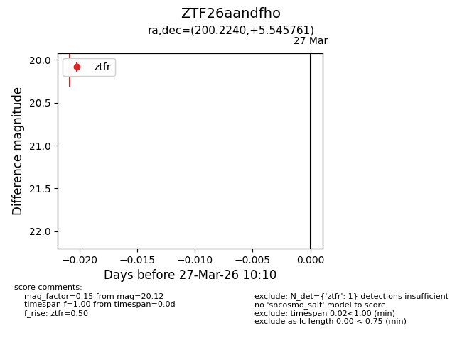
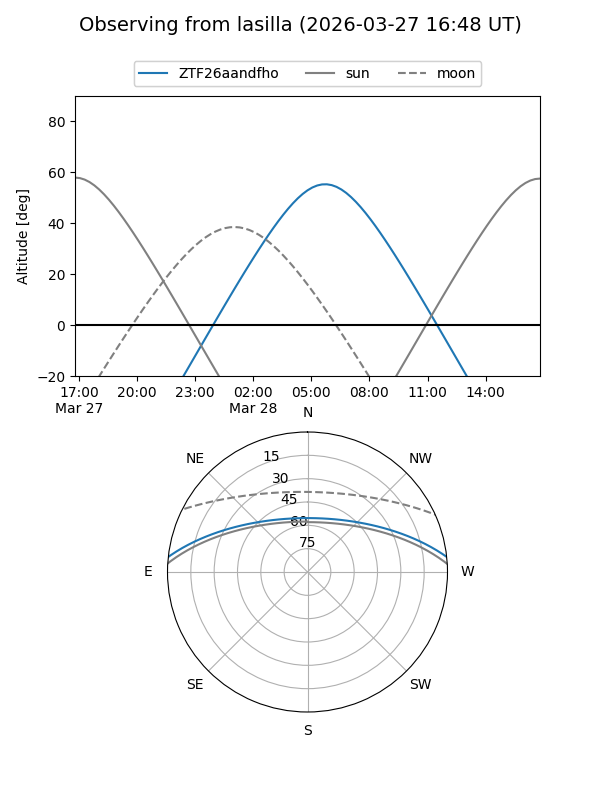
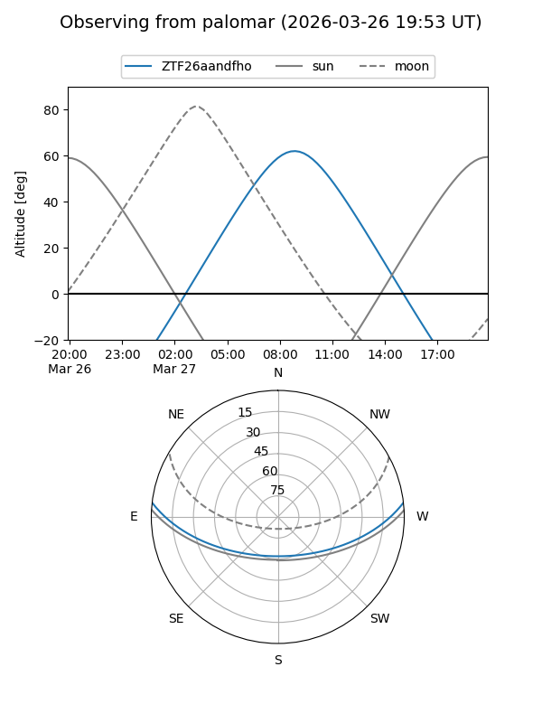

ZTF26aandfho
Target ZTF26aandfho at 2026-03-27 10:13
Aliases and brokers:
FINK: link
Lasair: link
ALeRCE: link
alt names
ZTF26aandfho (ztf,fink_ztf)
Coordinates:
equatorial (ra, dec) = 200.2240,+5.54576
equatorial (HMS+DMS) = 13:20:53.76,+05:32:44.74
galactic (l, b) = (322.2427,+67.30645)
Flags:
Photometry:
last ztfr=20.12
1 ztfr detections
Lightcurve

Visibility


Additional plots